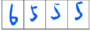
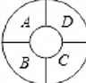
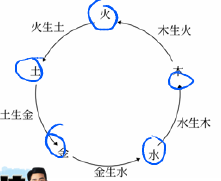
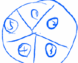
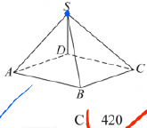
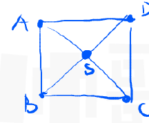
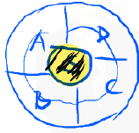
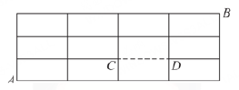
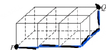

PDF：/Users/huyin/Downloads/【A11打印版PPT】《排列组合五大底层策略&最全题型方法》.pdf · Model：google.gemini-3.1-pro-global · 总耗时 569.9s
题目
题 1
填空
●●●○○
p1 · 2024·新高考II卷
在如图的 $4 \times 4$ 方格表中选 4 个方格，要求每行和每列均恰有一个方格被选中，则共有___种选法，在所有符合上述要求的选法中，选中方格的 4 个数之和的最大值是___.
排列组合最值问题
题 2
选择
●●●○○
p1 · 2023·全国甲卷
有五名志愿者参加社区服务，共服务星期六、星期天两天，每天从中任选两人参加服务，则两天中恰有1人连续参加两天服务的选择共有( )
- A. 120
- B. 60
- C. 40
- D. 30
排列组合分步乘法计数原理
题 3
选择
●●●○○
p1 · 2023·全国乙卷
甲乙两位同学从6种课外读物中各自选读2种，则这两人选读的课外读物中恰有1种相同的选法共有( )
- A. 30种
- B. 60种
- C. 120种
- D. 240种
排列组合组合数
题 4
填空
●●●○○
p1 · 2022·新高考I卷
某学校开设了4门体育类选修课和4门艺术类选修课，学生需从这8门课中选修2门或3门课，并且每类选修课至少选修1门，则不同的选课方案共有___种(用数字作答).
排列组合分类加法计数原理
题 5
选择
●●●○○
p1 · 2023·新高考II卷
某学校为了了解学生参加体育运动的情况，用比例分配的分层随机抽样方法作抽样调查，拟从初中部和高中部两层共抽取60名学生，已知该校初中部和高中部分别有400名和200名学生，则不同的抽样结果共有( )
- A. $C_{400}^{45} \cdot C_{200}^{15}$ 种
- B. $C_{400}^{20} \cdot C_{200}^{40}$ 种
- C. $C_{400}^{30} \cdot C_{200}^{30}$ 种
- D. $C_{400}^{40} \cdot C_{200}^{20}$ 种
分层抽样组合数
题 6
选择
●●●○○
p1 · 2021·乙卷
将5名北京冬奥会志愿者分配到花样滑冰、短道速滑、冰球和冰壶4个项目进行培训，每名志愿者只分配到1个项目，每个项目至少分配1名志愿者，则不同的分配方案共有( )
- A. 60种
- B. 120种
- C. 240种
- D. 480种
排列组合分组分配问题
题 7
选择
●●●○○
p1 · 2022·新高考II卷
甲、乙、丙、丁、戊5名同学站成一排参加文艺汇演，若甲不站在两端，丙和丁相邻，则不同的排列方式共有( )
- A. 12种
- B. 24种
- C. 36种
- D. 48种
排列组合相邻问题捆绑法
凸$n$边形有 ______ 条对角线；
答案：\frac{1}{2}n(n-3)
多边形对角线组合数
求$n$个元素的集合 $A=\{a_1, a_2, \cdots, a_n\}$ 的子集个数 ______
答案：2^n
集合子集个数组合数
把6名大学生分配到7个不同的村，有 ______ 种分法；
- A. $6^7$
- B. $7^6$
- C. $6*7$
答案：B
分配问题分步乘法原理
25人排成 $5 \times 5$ 方阵，现从中选3人，要求3人不在同一行也不在同一列，不同的选法有 ______ 种。
答案：600
方阵选人组合数分步乘法原理
题 12
选择
●●●○○
p3 · 【2025 学年·山东省青岛市月考】
【2025 学年·山东省青岛市月考】下列问题属于排列问题的是（ ）
①从 10 个人中选 2 人分别去种树和扫地；
②从 10 个人中选 2 人去扫地；
③从班上 30 名男生中选出 5 人组成一个篮球队；
④从数字 5，6，7，8 中任取两个不同的数作幂运算.
- A. ①④
- B. ①②
- C. ④
- D. ①③④
答案：A
排列与组合的区别排列问题判定
若 $C_n^2 = 15$，则下列选项中，$A_n^2$ 的值为（ ）
- A. 15
- B. 25
- C. 30
- D. 60
答案：C
查看解析
$A_n^2 = C_n^2 A_2^2 = 15 \times 2 = 30$
排列数与组合数的关系排列数公式组合数公式
【改编】在一次班级活动中，从 $n$ 名同学中选出 2 人作为志愿者的选法共有 15 种，若从中选出 2 人分别担任组长和副组长，则不同的安排方法数为（ ）
答案：30
查看解析
选出 2 人作为志愿者是组合问题，即 $C_n^2 = 15$。选出 2 人分别担任组长和副组长是排列问题，即 $A_n^2 = C_n^2 A_2^2 = 15 \times 2 = 30$。
排列与组合的区别排列数与组合数的关系
题 15
选择
●●●○○
p4 · 2018·新课标Ⅰ15
从2位女生，4位男生中选3人参加科技比赛，且至少有1位女生入选，则不同的选法共有____种。（用数字填写答案）
- A. 12
- B. 16
- C. 18
- D. 24
答案：B
查看解析
至少有1位女生的反面是0位女生（全男）。总选法减去反面选法：$C_6^3 - C_4^3$。
排列组合间接法正难则反
六名同学暑期相约去都江堰采风观景，结束后六名同学排成一排照相留念，若甲与乙相邻，丙与丁不相邻，则不同的排法共有（ ）.
- A. 48种
- B. 72种
- C. 120种
- D. 144种
答案：D
查看解析
找、排、插。甲乙相邻，捆绑为整体，内部有$A_2^2$种排法；丙丁不相邻，用插空法。先排戊、己和甲乙整体，有$A_3^3$种排法。这三个元素产生4个空位，将丙、丁插入这4个空位中，有$A_4^2$种排法。总排法数为$A_3^3 \cdot A_2^2 \cdot A_4^2 = 144$种。
相邻问题捆绑法不相邻问题插空法排列组合
现有4个同学站成一排，将甲、乙2个同学加入排列，保持原来4个同学的顺序不变，则不同的排列方法共有（ ）种.
- A. 10
- B. 20
- C. 30
- D. 60
答案：C
查看解析
$\frac{A_6^6}{A_4^4} = 30$
定序问题缩倍法排列组合
三根绳子上一共挂有8只气球，绳子上的球数依次为2，3，3，每枪只能打破一只球，而且规定每根绳子上只有打破下面的球才能打上面的球，则将这些气球都打破的不同的打法数是（ ）.
- A. 350
- B. 140
- C. 560
- D. 280
答案：C
查看解析
$\frac{A_8^8}{A_2^2 A_3^3 A_3^3}$
定序问题缩倍法排列组合
$A, B, C, D, E$ 五个同学站成一排，要求 $A$ 在 $B$ 的前面，且 $D$ 在 $E$ 的前面，不同的站法有____种.
查看解析
$\frac{A_5^5}{A_2^2 A_2^2}$
定序问题缩倍法排列组合
6个不同元素排成前后两排，每排3个元素，有____种排法？
答案：$A_6^6$
查看解析
前后两排可看成把同一排分成两段，转化为单排问题，即全排列 $A_6^6$。
多排问题排列组合
题 21
填空
●●●●○
p7 · 改编·陷阱题
6个不同元素排成前后两排，有____种排法？
答案：$5 \cdot A_6^6$
查看解析
分为5类情况（如前排1个后排5个，前排2个后排4个等），每种情况的排列数为 $A_6^6$，故总排法为 $5 \cdot A_6^6$。
多排问题分类加法计数原理
8个不同元素排成前后两排，每排4个元素，其中甲、乙两个元素排在前排，丙元素排在后排，不同的排法有____种
答案：$A_4^2 \cdot A_4^1 \cdot A_5^5$
查看解析
特殊元素优先处理。甲、乙排在前排有 $A_4^2$ 种排法，丙排在后排有 $A_4^1$ 种排法，剩余5个元素全排列有 $A_5^5$ 种排法。根据分步乘法计数原理，共有 $A_4^2 \cdot A_4^1 \cdot A_5^5$ 种排法。
多排问题特殊元素优先分步乘法计数原理
有10个人围着一张圆桌坐成一圈，共有多少种不同的坐法？
- A. $A_{10}^{10}$
- B. $A_9^9$
- C. $A_8^8$
- D. $A_{11}^{11}$
答案：B
圆排列
有5对姐妹站成一圈，要求每对姐妹相邻，有多少种不同站法？
- A. 96
- B. 192
- C. 384
- D. 768
答案：D
查看解析
采用捆绑法，将每对姐妹看作一个整体，5个整体进行圆排列有 $A_4^4$ 种排法；每对姐妹内部有 $A_2^2$ 种排法，共5对，故总排法数为 $A_4^4 \times (A_2^2)^5 = 24 \times 32 = 768$。
圆排列捆绑法
如图所示，用6种不同的颜色给图中的4个格子涂色，每个格子涂一种颜色，要求相邻的两个格子颜色不同，则不同的涂色方法共有（ ）种．

4个格子排成一排的条形图
- A. 480
- B. 600
- C. 360
- D. 750
答案：D
条形染色问题排列组合乘法原理
【2025·山东烟台高二(下)质检】如图，将一环形花坛分成 $A$，$B$，$C$，$D$ 四个区域，现有 5 种不同的花供选种，要求在每个区域里种 1 种花，且相邻的 2 个区域种不同的花，则不同的种法种数为________.

环形花坛分成A,B,C,D四个区域
答案：260
查看解析
常规解法：
(1) 用 4 色：$A_5^4 = 120$
(2) 用 3 色：$C_2^1 \cdot A_5^3 = 120$
(3) 用 2 色：$AC$ 同，$BD$ 同：$A_5^2 = 20$
$120 + 120 + 20 = 260$
帅哥妙法：
环形染色——$m$ 色涂 $n$ 区域
涂法：$(m-1)^n + (-1)^n(m-1)$
$(5-1)^4 + (5-1) = 16 \times 16 + 4 = 256 + 4 = 260$
环形染色问题排列组合分类讨论
中国古代哲学用五行“金、木、水、火、土”来解释世间万物的形成和联系，如图，现用3种不同的颜色给五“行”涂色，要求相邻的两“行”不能同色，则不同的涂色方法种数有( )
A. 24
B. 36
C. 30
D. 20

五行相生相克图

手绘五等分圆
- A. 24
- B. 36
- C. 30
- D. 20
答案：C
查看解析
常规解法：
设3种不同的颜色为$a, b, c$，对于“火、土”两个位置有$3 \times 2 = 6$种不同的涂色方法，不妨设“火、土”两个位置分别涂的颜色为$a, b$。
(1) 若“金”位的涂色为$a$，则有：
①若“水”位的涂色为$b$，则“木”位的涂色为$c$，共1种不同的涂色方法；
②若“水”位的涂色为$c$，则“木”位的涂色为$b$，共1种不同的涂色方法，
所以此时共2种涂色方法；
(2) 若“金”位的涂色为$c$，则有：
①若“水”位的涂色为$a$，则“木”位的涂色为$b$或$c$，共2种不同的涂色方法；
②若“水”位的涂色为$b$，则“木”位的涂色为$c$，共1种不同的涂色方法，
所以此时共3种涂色方法。
综上：共有$6 \times (2 + 3) = 30$种不同的涂色方法。
帅哥妙法：
环形染色——$m$ 色涂 $n$ 区域
涂法：$(m-1)^n + (-1)^n(m-1)$
$2^5 - 2 = 30$
环形染色问题排列组合分类讨论
如图，将一个四棱锥的每一个顶点染上一种颜色，并使同一条棱上的两端异色，如果只有 5 种颜色可供使用，则不同的涂色方法总数为( )
A. 60
B. 480
C. 420
D. 70

四棱锥S-ABCD

四棱锥底面展开图

手绘四等分圆
- A. 60
- B. 480
- C. 420
- D. 70
答案：C
查看解析
Step 1: 中心 $S \rightarrow 5$ 种选择
Step 2: 四色涂 $ABCD$ 区域
$(m-1)^n + (-1)^n(m-1)$
$81 + 3 = 84$
$5 \times 84 = 420$
立体图形染色环形染色问题乘法原理
如图，某城市的街区由12个全等的矩形组成（实线表示马路），CD段马路由于正在维修，暂时不通，则从A到B的最短路径有____条。

4×3网格及CD维修路段示意图
答案：26
查看解析
总步数为$4+3=7$步，不考虑维修时的总最短路径数为$C_7^4 = 35$条。经过CD段的最短路径分为两段：从A到C有$C_3^1=3$条，从D到B有$C_3^1=3$条，共$3 \times 3 = 9$条。因此，不经过CD段的最短路径有$35 - 9 = 26$条。
最短路径问题组合数排除法
由若干根相同的木棍组成如图所示的长方体框架，一只蚂蚁从点P出发，沿木棍爬行到点Q的最短路径有( ).

长方体框架最短路径示意图
- A. 15种
- B. 30种
- C. 48种
- D. 60种
答案：D
查看解析
从P到Q的最短路径共需要走6步，其中向右3步，向后2步，向上1步。因此最短路径数为$C_6^3 \cdot C_3^2 \cdot C_1^1 = 60$种。
最短路径问题空间网格组合数
按照下述方式，将6本书分成三份，各有多少种方法？
（4）书互不相同，每份2本；
（5）书互不相同，平均分给甲、乙、丙三人；
答案：（4）$\frac{C_6^2 C_4^2 C_2^2}{A_3^3}$；（5）$\frac{C_6^2 C_4^2 C_2^2}{A_3^3} \cdot A_3^3$
查看解析
（4）书互不相同，每份2本，属于完全平均分组问题，方法数为 $\frac{C_6^2 C_4^2 C_2^2}{A_3^3}$。
（5）书互不相同，平均分给甲、乙、丙三人，属于先分组后分配问题，方法数为 $\frac{C_6^2 C_4^2 C_2^2}{A_3^3} \cdot A_3^3$。
排列组合分组分配问题完全平均分组
按照下述方式，将6本书分成三份，各有多少种方法？
（6）书互不相同，一份4本，其余两份都是1本；
（7）书互不相同，分给甲、乙、丙三人，甲得4本，乙丙各得1本；
（8）书互不相同，分给甲、乙、丙三人，每人至少一本。
答案：（6）$\frac{C_6^4 C_2^1 C_1^1}{A_2^2}$；（7）$C_6^4 C_2^1 C_1^1$；（8）$\frac{C_6^2 C_4^2 C_2^2}{A_3^3} \cdot A_3^3 + \frac{C_6^4 C_2^1 C_1^1}{A_2^2} \cdot A_3^3 + C_6^1 C_5^2 C_3^3 \cdot A_3^3 = 540$
查看解析
（6）书互不相同，一份4本，其余两份都是1本，属于部分平均分组问题，方法数为 $\frac{C_6^4 C_2^1 C_1^1}{A_2^2}$。
（7）书互不相同，分给甲、乙、丙三人，甲得4本，乙丙各得1本，属于定向分配问题，方法数为 $C_6^4 C_2^1 C_1^1$。
（8）书互不相同，分给甲、乙、丙三人，每人至少一本，分为三种情况：2+2+2，4+1+1，1+2+3。方法数为 $\frac{C_6^2 C_4^2 C_2^2}{A_3^3} \cdot A_3^3 + \frac{C_6^4 C_2^1 C_1^1}{A_2^2} \cdot A_3^3 + C_6^1 C_5^2 C_3^3 \cdot A_3^3 = 540$。
排列组合分组分配问题部分平均分组定向分配
按照下述方式，将6本书分成三份，各有多少种方法？
（1）书互不相同，一份1本，一份2本，一份3本；
（2）书互不相同，分给甲、乙、丙三人，甲得1本，乙得2本，丙得3本；
（3）书互不相同，分给甲、乙、丙三人，一人1本，一人2本，一人3本；
（4）书互不相同，每份2本；
（5）书互不相同，平均分给甲、乙、丙三人；
（6）书互不相同，一份4本，其余两份都是1本；
（7）书互不相同，分给甲、乙、丙三人，甲得4本，乙丙各得1本；
（8）书互不相同，分给甲、乙、丙三人，每人至少一本。
排列组合分组分配问题
有10个运动员名额，分给班号分别为1，2，3的3个班。
（1）每班至少1个名额，有多少种分配方案？
（2）每班至少2个名额，有多少种分配方案？
（3）可以允许某些班级没有名额，有多少种分配方案？
10个相同的小球
排列组合相同元素分组问题隔板法
知识资源
📘 概念/公式 11
【底层根本】两个计数原理
1. 分类加法计数原理
$N = m_1 + m_2 + \cdots + m_n$
2. 分步乘法计数原理
$N = m_1 \times m_2 \times \cdots \times m_n$
排列组合五大底层策略
策略1：分类加法、分步乘法 —— 计数两大底层原理
策略2：有序排列、无序组合 —— 判定核心标准
策略3：特殊元素 / 位置优先 —— 受限问题通用策略
策略4：正难则反、间接排除 —— 正面复杂逆向求解
策略5：先分类后分步，先组后排 —— 分组分配标准流程
排列与排列数、组合与组合数
排列与排列数
与顺序有关
$A_n^m$
$m$：取出的元素个数（涉及顺序）
$n$：不同元素的总数
【排列数公式】$A_n^m = n(n-1)(n-2)\cdots(n-m+1)$（$m$个连续正整数的积）
组合与组合数
与顺序无关
$C_n^m$
$m$：取出的元素个数（不涉及顺序）
$n$：不同元素的总数
【组合数公式】$C_n^m = \frac{A_n^m}{A_m^m} = \frac{n(n-1)(n-2)\cdots(n-m+1)}{m(m-1)(m-2)\times\cdots\times 2 \times 1}$
排列组合五大底层策略
策略1：分类加法、分步乘法 —— 计数两大底层原理
策略2：有序排列、无序组合 —— 判定核心标准
策略3：特殊元素/位置优先 —— 受限问题通用策略
策略4：正难则反、间接排除 —— 正面复杂逆向求解
策略5：先分类后分步，先组后排 —— 分组分配标准流程
排列组合核心题型方法大纲
【模块一】排列组合五大底层策略
【模块二】排列问题四大核心题型方法
题型1：相邻问题捆绑法，不相邻问题插空法
题型2：定序问题——缩倍法
题型3：排队问题——多排、环排、错排
题型4：染色问题——条形、环形
【模块三】组合问题三大核心题型方法
题型5：最短路径问题
题型6：不同元素分组分配（均匀/不均匀）
题型7：相同元素分组分配（隔板/变式）
n个元素圆排站法公式
圆排问题，可任意选定某个元素作为开头展成单排（没有首位），然后将其它 $(n-1)$ 个元素全排列即可，即 $A_{n-1}^{n-1} = (n-1)!$。或者理解为 $n$ 个全排 $A_n^n$ 除以 $n$ 消除重复。结论：n个元素圆排站法为 $A_{n-1}^{n-1} = (n-1)!$。
简单的染色问题：条形染色问题
如图，有$n$个区域或顶点，现用$m$种不同的颜色填充这$n$个区域，每个区域或顶点染一种颜色，要求相邻区域或顶点不同色，则不同的染色方法有多少种？
这$n$个区域的染色方法数为：$m(m-1)^{n-1}$
简单的染色问题：环形染色问题
如图，有$n$个区域或顶点，现用$m$种不同的颜色填充这$n$个区域，要求相邻区域或顶点不同色，则不同的染色方法有多少种？
常规解法：分类+枚举
证明过程（不需要掌握）
有 $H_n^m + H_{n-1}^m = m(m-1)^{n-1}$.
$\therefore H_3^m + H_2^m = m(m-1)^2$, $H_4^m + H_3^m = m(m-1)^3$,
$H_5^m + H_4^m = m(m-1)^4$, $\cdots$, $H_n^m + H_{n-1}^m = m(m-1)^{n-1}$.
稍作整理可得：
$+(H_3^m + H_2^m) = m(m-1)^2$,
$-(H_4^m + H_3^m) = m(1-m)^3$,
$+(H_5^m + H_4^m) = m(1-m)^4$,
$\cdots$
$(-1)^{n-1}(H_n^m + H_{n-1}^m) = m(1-m)^{n-1}$.
将以上各式全部累加，有：
(1) 当 $n$ 为偶数时：$-H_n^m + H_2^m = m(1-m)^2 \frac{[1-(1-m)^{n-2}]}{1-(1-m)} = (1-m)^2 - (1-m)^n$,
$\therefore H_n^m = m(m-1)$, $\therefore H_n^m = m(m-1) + (1-m)^n - (1-m)^2 = (1-m)^n - (1-m)$,
$\therefore$ 当 $n$ 为偶数时：$H_n^m = (m-1)^n + (m-1)$;
(2) 当 $n$ 为奇数时：$H_n^m + H_2^m = m(1-m)^2 \frac{[1-(1-m)^{n-2}]}{1-(1-m)} = (1-m)^2 - (1-m)^n$,
$\therefore H_n^m = (1-m)^2 - (1-m)^n - m(m-1) = (1-m) - (1-m)^n$,
$\because n$ 为奇数，$\therefore (1-m)^n = -(m-1)^n$，所以此时 $H_n^m = (m-1)^n - (m-1)$.
$\therefore$ 综上可知，$H_n^m = \begin{cases} (m-1)^n + (m-1), & n \text{ 为偶数} \\ (m-1)^n - (m-1), & n \text{ 为奇数} \end{cases}$.
$\therefore H_n^m = (m-1)^n + (-1)^n(m-1)$. 【结论三】得证.
环形染色m色涂n区域公式
在排列组合的环形染色问题中，若有 $n$ 个区域排成一个环形，要求相邻区域颜色不同，且有 $m$ 种颜色可供选择，则总的涂色方法数公式为：$(m-1)^n + (-1)^n(m-1)$。此公式可用于快速求解此类环形染色问题。
不同元素的分组问题
（1）不同元素的分组问题
情形一：完全平均分组 $\frac{C_n^r C_{n-r}^r C_{n-2r}^r \cdots C_r^r}{A_m^m}$，其中，$n=mr$。
情形二：完全不平均分组 $C_n^{r_1} C_{n-r_1}^{r_2} C_{n-r_1-r_2}^{r_3} \cdots C_{r_m}^{r_m}$，其中，$n=r_1+r_2+\cdots+r_m$。
情形三：部分平均分组 部分缩倍
🛠️ 方法 12
排列组合核心题型与方法
【模块一】排列组合五大底层策略 (基础·60分必备)
【模块二】排列问题四大核心题型方法 (重点·60分必备)
题型1：相邻问题捆绑法，不相邻问题插空法 (30分)
题型2：定序问题——缩倍法 (60分)
题型3：排队问题——多排、环排 (90分)
题型4：染色问题——条形、环形 (90分)
【模块三】组合问题三大核心题型方法 (重点·60分必备)
题型5：最短路径问题 (60分)
题型6：不同元素分组分配（均匀/不均匀） (60分)
题型7：相同元素分组分配（隔板/变式） (80分)
排列组合五大底层策略
策略1：分类加法、分步乘法 —— 计数两大底层原理
策略2：有序排列、无序组合 —— 判定核心标准
策略3：特殊元素 / 位置优先 —— 受限问题通用策略
策略4：正难则反、间接排除 —— 正面复杂逆向求解
策略5：先分类后分步先组后排 —— 分组分配标准流程
策略2：有序排列、无序组合 —— 判定核心标准
回顾旧知
排列：选出来 + 还要排顺序，顺序不同算不同结果。
组合：只选出来 + 不排顺序，顺序换了还是同一种。
常用排列（有序）
◆ 排队、站队、排座位、排顺序
◆ 选几个人分别担任不同职务（班长等）
◆ 车票、航线、信号、密码、编号
◆ 前后、左右、甲乙分工有区别
常用组合（无序）
◆ 选人组队、选代表、选小组（无分工）
◆ 选物品取几件、抽签、选题目
◆ 几何：选点连直线、三角形、四边形
◆ 分组不分先后、单纯挑出来就行
【判断技巧】随便调换两个元素位置：
◆ 结果变了 → 排列
◆ 结果没变 → 组合
特殊元素/位置优先策略
受限问题通用策略：（1）特殊元素、位置问题——优先排列法。谁特殊谁优先。在排列问题中，通常是谁特殊就优先考虑谁。
排列组合五大底层策略
策略1：分类加法、分步乘法 —— 计数两大底层原理
策略2：有序排列、无序组合 —— 判定核心标准
策略3：特殊元素 / 位置优先 —— 受限问题通用策略
策略4：正难则反、间接排除 —— 正面复杂逆向求解
策略5：先分类后分步，先组后排 —— 分组分配标准流程
相邻问题捆绑法，不相邻问题插空法
某些元素要求必须相邻时，可以先将这些元素看成一个整体，再与其他元素进行排列，这种处理问题的方法叫做“捆绑法”。注意内部顺序。
某些元素要求互不相邻时，可以先安排其他元素进行排列，再将这些互不相邻的元素插入空位中，这种处理问题的方法叫做“插空法”。
定序问题——缩倍法
某些元素的顺序确定时，可以先将所有元素进行排列，再除以这些元素顺序不固定时的排列数，这种处理问题的方法叫做“缩倍法”。
前提：某些元素顺序确定。
策略：先排所有-再除以定序的全排列数。
易错：忽视定序元素的全排列。
注：n个元素顺序已定，除以 $A_n^n$。
多排问题的处理方法
求一些元素排成前后几排，有多少种排法？处理多排问题时，前后两排可看成把同一排分成两段，即多排问题可以转化为单排问题（直线排列）来处理。
帅哥数学独门绝技197招：环形染色
环形染色——$m$色涂$n$区域
涂法：$(m-1)^n + (-1)^n(m-1)$ （无中心花坛）
环形染色——m色涂n区域
环形染色——$m$ 色涂 $n$ 区域
涂法：$(m-1)^n + (-1)^n(m-1)$
最短路径问题的组合数计算方法
如图，从A到B的最短路径条数为：
①横看：从$m+n$步中选出$m$步“向右”走，即从A到B的最短路径为$C_{m+n}^m$条！
②竖看：从$m+n$步中选出$n$步“向上”走，即从A到B的最短路径为$C_{m+n}^n$条！
不同元素不均匀分组分配方法
对于不同元素的不均匀分组分配问题，可以分为以下几种情况：1. 分组问题：直接使用组合数相乘，如将6本不同的书分成1本、2本、3本三份，方法数为 $C_6^1 C_5^2 C_3^3$。2. 定向分配：将分好的组分配给具体的对象，如甲得1本，乙得2本，丙得3本，方法数同分组问题，为 $C_6^1 C_5^2 C_3^3$。3. 不定向分配：将分好的组分配给多个对象，如一人1本，一人2本，一人3本，需要在分组的基础上乘以全排列，方法数为 $C_6^1 C_5^2 C_3^3 \cdot A_3^3$。
⚠️ 易错 1
均匀分组的重复问题及处理方法
在处理不同元素的均匀分组问题时，需要注意均匀分组会产生重复计算。重点：均匀分组有重复！如果有几个组的元素个数相同，则需要除以 $A_n^n$（其中 $n$ 为元素个数相同的组数）来消除重复。
⭐ 重难点 3
环排问题的核心概念
$n$个不同元素站成一个圆圈，不同的站法有多少种？圆排问题的核心在于：没有首位和末位之分，要消除旋转重复！例如排列 $a_1, a_2, a_3, \cdots, a_n$；$a_2, a_3, \cdots, a_n, a_1$；$\cdots$；$a_n, a_1, \cdots, a_{n-2}, a_{n-1}$ 在圆排列中只算1种。
圆排问题核心
n个不同元素站成一个圆圈，不同的站法有多少种？圆排问题核心：没有首位和末位之分，要消除旋转重复！例如 $a_1, a_2, a_3, \cdots, a_n$；$a_2, a_3, \cdots, a_n, a_1$；$\cdots$；$a_n, a_1, \cdots, a_{n-2}, a_{n-1}$ 在圆排列中只算1种。
不同元素分组分配（均匀/不均匀）
不同元素分组分配问题是排列组合中的重点题型，主要分为均匀分组和不均匀分组两类情况，需要掌握相应的分配策略与去重技巧。